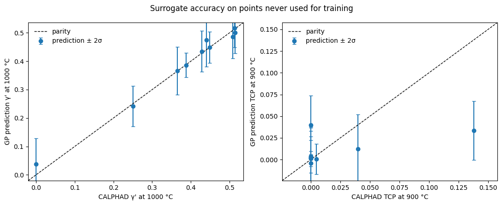
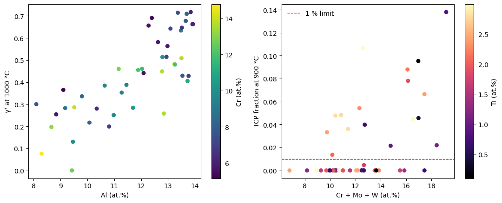
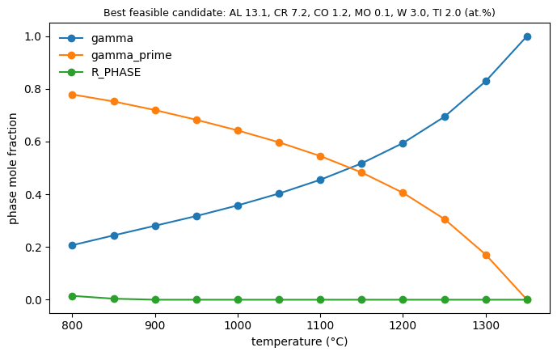

Case study · CALPHAD + ML · Methodological audit
Validation protocol for automated CALPHAD + ML superalloy screening
What started as a script coupling pycalphad with a Gaussian Process surrogate and Bayesian optimisation to screen γ/γ′ Ni-base superalloys turned into a four-stage validation protocol after a code and data audit uncovered silent thermodynamic and surrogate failure modes.

Why I audited my own pipeline
I first built this pipeline quickly as a learning project: pycalphad computes γ/γ′ equilibria for Ni–Al–Cr–Co–Mo–W–Ti alloys, a Gaussian-process (GP) surrogate learns the γ′ fraction and the TCP-phase fraction, and constrained Bayesian optimisation proposes new alloys. It produced rankings, feature importances and “validated” candidates. When I tried to turn it into something publishable, I could not trace where its numbers came from.
That made it a good test case. A pipeline that fails silently is exactly what a validation scheme has to catch. So the question changed from “which alloy is best?” to what checks does an automated CALPHAD + ML pipeline need before its output can be trusted, and what do they cost? Each check below exists because it would have caught a real failure in this pipeline.
Failure 1: the phase that was always 1.000
The open MatCalc mc_ni database describes γ and γ′ with one partitioned order/disorder model. When the ordered phase is disordered, pycalphad still reports it under the γ′ label. The pipeline picked phases by label, so it reported γ′ = 1.000 for every alloy, including Al-free Ni–5Cr, which cannot contain γ′ at all. The GP then fitted a constant very well, reported low uncertainty, and the optimiser ranked noise.
The fix was to identify γ′ by what it physically is: an ordered phase, recognised by the difference between its sublattice site fractions. The lasting change is a regression test: Ni–5Cr must give zero γ′. That single test, run before any surrogate is fitted, would have caught the problem on day one.
Failure 2: a database and a solver that do not fit together
With identification fixed, a second problem appeared. mc_ni was assessed for MatCalc's local minimiser. pycalphad uses global minimisation, which explores composition regions the assessment never constrained. There it finds an Al-poor, Cr/Co/Mo-rich “γ′” that is not real: in 25 of 45 evaluated alloys, and in 80 % of alloys with at least 3 at.% Co. In the design space it is a minority phase; in Co-rich commercial alloys such as Udimet 720 it replaces the γ matrix entirely.
This cannot be fixed without re-assessing the database, but it can be detected cheaply: a real γ′ needs at least 10 at.% of γ′-forming elements (Al, Ti, Nb, Ta, Hf). Every ordered composition set is now checked against that rule and flagged. The general lesson is that an assessment is valid for the solver it was fitted with, not automatically for another one.
Failure 3: references and data that did not exist
Checking provenance found that 13 of 20 validation DOIs and 14 of 20 reference DOIs in the original
repository did not resolve, and that some summary plots came from a four-element test database or a
hand-written formula rather than the trained model. I quarantined all of it and kept it under
legacy/ for provenance, unused. I then built a new validation set by hand, where every value
carries the page and table it came from and is rejected by the loader if it does not.
Why these benchmarks
To measure how wrong the corrected model is, I chose sources that climb in complexity, so an error can be tied to the alloying level where it starts: the binary Ni–Al γ′ boundary (Ma & Ardell 2003), Ni–Al–Cr tie-lines at 1150 °C (Kitajima et al. 2006), Ni–Al–Cr–Ti compositions and phase assemblages (Pícha et al. 2004), and three commercial alloys (Udimet 720, Haynes 282, Nimonic 115). I used only measured values. Two candidate papers were dropped because their γ′ data were themselves calculated.
The picture is clear: errors are small in the binary (about 1 at.%, close to the scatter between experimental methods) and grow with alloying. The direct comparison with a commercial database on identical alloys (7/16 vs 13/16) is the strongest single argument for repeating the study with Thermo-Calc TCNI.
Statistical caveat. Values from one source come from one phase-diagram section, so they are not independent samples. The confidence intervals and Holm-adjusted p-values are screening statistics that separate resolved offsets from scatter, not formal significance tests. The Haynes 282 γ′ solvus is +20 K too high (a single developer-stated value); the Udimet 720 comparison is affected by the artefact and is reported separately.
Failure 4: a surrogate that had learnt a straight line
With 45 alloys in six dimensions, I suspected a GP had little room to beat a simple model, so I scored it against linear regression in repeated cross-validation. For γ′ at 1000 °C the GP's error (RMSE 0.0445) is no better than linear regression (0.0427). Its uncertainty is also too narrow: only 51 % of held-out residuals fall within ±1σ instead of 68 %, and 73 % within ±2σ instead of 95 %. The GP is still useful because Bayesian optimisation needs a variance, but its accuracy alone says nothing, and its error bars overstate confidence.


The corrected optimisation, read honestly
With all four fixes, 12 iterations of constrained Bayesian optimisation (TCP and artefact both below 1 %) raise the best feasible γ′ at 1000 °C from 0.48 to 0.64. Almost all of that gain came by iteration 2, and 8 of the 12 proposals broke a constraint.

All the best candidates are low in Co and high in Al. I do not present that as a design result: low Co is also where the database artefact is absent, so the optimiser is partly steered by where the database works, not by where alloys are best. No mechanical, microstructural or processing claim is made.
Current limits, and the plan to close them
Each limit below has a concrete next step and a check that shows whether it worked, ordered by how much it would change the conclusions.
- The open database limits every number. Plan: rerun the identical pipeline and benchmark with the commercial Thermo-Calc TCNI database through a licensed route. Check: whether the three resolved offsets and the 7/16 phase-assemblage score improve, which tells whether they belong to mc_ni or to open assessments in general.
- Modern single-crystal alloys are out of reach. Plan: TCNI also covers Ta and Re, which mc_ni lacks, so the same pipeline can then include CMSX-4-type compositions.
- Database uncertainty is not propagated. Plan: propagate thermodynamic parameter uncertainty into the γ′ and solvus predictions, and report it separately from the surrogate's own uncertainty instead of adding the two.
- The surrogate's error bars are too narrow. Plan: recalibrate the GP intervals on out-of-fold residuals and keep the linear baseline in every report. Check: about 68 % of held-out residuals inside ±1σ and 95 % inside ±2σ.
- Validation values were extracted and checked by one person. Plan: a second, independent extraction of all 50 values from the source papers, and more primary data sets as they are found.
- The checks are a protocol on paper. Plan: run all four stages as standing automated tests, so every database or code change has to pass them before any result is used.
Takeaways
The transferable result is the protocol, not the alloy: (1) an invariant test at the thermodynamic layer, (2) a database–solver compatibility guard, (3) a provenance audit, and (4) a benchmark against primary data, with the surrogate scored against a baseline and its uncertainty checked. The first two must run before any surrogate is fitted, because the failures they catch make everything downstream meaningless. Each costs minutes against the 45-alloy sweep it protects. I derived the protocol from these failures, so this case is a consistency check, not proof that it catches everything. The work is a reproducible Quarto report (tag v2.1-submission, 47 tests, all numbers recomputed by a verifier script).
Lessons learned
- Test an invariant before fitting anything. One composition with a known answer (Ni–5Cr has no γ′) would have caught a failure that invalidated the whole stack.
- A database and a solver are a pair. An assessment fitted for one minimiser can produce phases that do not exist under another.
- Score every surrogate against a trivial baseline and check its coverage. A GP that ties with linear regression has not learnt anything extra, and uncalibrated error bars mislead the optimiser.
- Fast prototypes need a provenance audit before their results are used. The plots looked professional while the references behind them did not resolve. I now verify every DOI and every data row before any result is used.
- When an optimiser converges, ask why it chose that region. Here it partly chose where the database is valid, not where alloys are best.